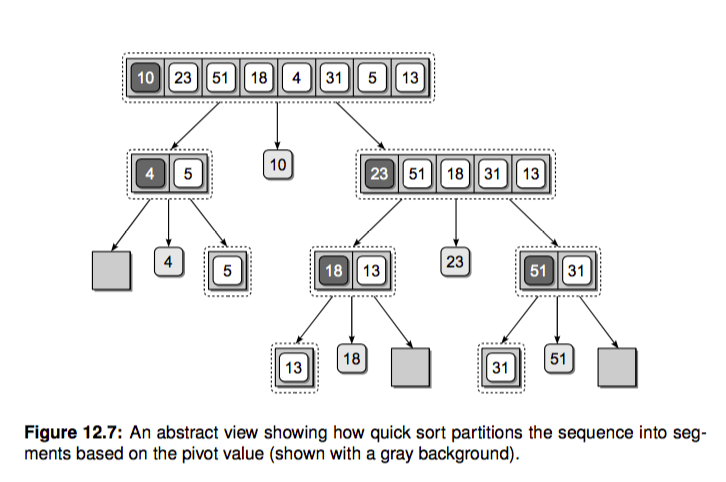
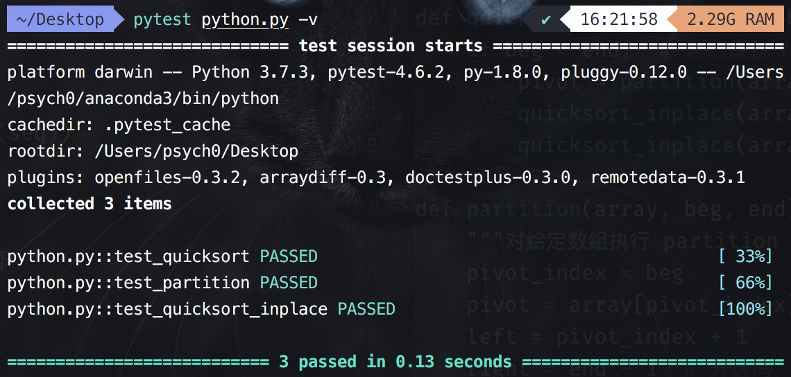

算法与数据结构原理及Python实现
算法与数据结构原理及Python实现之十六：快速排序
16. 快速排序
快速排序名字可不是盖的，很多程序语言标准库实现的内置排序都有它的身影，我们就直奔主题吧。和归并排序一样，快排也是一种分而治之(divide and conquer)的策略。归并排序把数组递归成只有单个元素的数组，之后再不断两两合并，最后得到一个有序数组。这里的递归基本条件就是只包含一个元素的数组，当数组只包含一个元素的时候，我们可以认为它本来就是有序的（当然空数组也不用排序）。
快排的工作过程其实比较简单，三步走：
- 选择基准值 pivot 将数组分成两个子数组：小于基准值的元素和大于基准值的元素。这个过程称之为 partition；
- 对这两个子数组进行快速排序；
- 合并结果。

根据这个想法我们可以快速写出快排的代码，简直就是在翻译上边的描述：
def quicksort(array): size = len(array) if not array or size < 2: # 递归出口，空数组或者只有一个元素的数组都是有序的 return array pivot_idx = 0 pivot = array[pivot_idx] less_part = [array[i] for i in range(size) if array[i] <= pivot and pivot_idx != i] great_part = [array[i] for i in range(size) if array[i] > pivot and pivot_idx != i] return quicksort(less_part) + [pivot] + quicksort(great_part) def test_quicksort(): import random seq = list(range(10)) random.shuffle(seq) assert quicksort(seq) == sorted(seq)
很简单。当然这个实现有两个不好的地方:
- 第一是它需要额外的存储空间，我们想实现 inplace 原地排序。如上面代码中的
less_part和right_part都是额外的空间。 - 第二是它的 partition 操作每次都要两次遍历整个数组，我们想改善一下。
这里我们就来优化一下它，实现 inplace 排序并且改善下 partition 操作。新的代码大概如下。
下面代码中的 partition 函数可以实现只遍历一次数组就可以完成 partition 操作。实现的思路是设置首位俩个指针 left, right，两个指针不断向中间收拢。如果遇到 left 位置的元素大于 pivot 并且 right 指向的元素小于 pivot，我们就交换这俩元素，当 left > right 的时候退出就行了，这样实现了一次遍历就完成了 partition。如下图所示（更多内容可参考 [referenc]-[快速排序.mp4]。）：

具体代码如下：
def quicksort_inplace(array, beg, end): if beg < end: # 递归直到 beg < end（也就是只剩下一个元素的时候；beg = end 的时候是只有一个元素的时候）；只有一个元素的时候就是有序的 pivot = partition(array, beg, end) # 得到 pivot 的位置；此时的数组左边的元素都是比 pivot 小的，数组右边的元素就都是比 pivot 大的；所以后面的递归调用就只对 pivot 左边和右边的元素分别“重排”就好了 quicksort_inplace(array, beg, pivot) quicksort_inplace(array, pivot+1, end) def partition(array, beg, end): """对给定数组执行 partition 操作，返回新的 pivot 位置""" pivot_index = beg pivot = array[pivot_index] left = pivot_index + 1 right = end - 1 # 开区间，最后一个元素位置是 end-1 [0, end-1] or [0: end)，括号表示开区间 while True: # 从数组的左边开始找比 pivot 大的元素 while left <= right and array[left] < pivot: left += 1 # 从数组的右边开始找比 pivot 小的元素 while right >= left and array[right] >= pivot: right -= 1 # 如果 left > right，就可以退出了 if left > right: break else: # 否则的话就将左右的元素进行对调 array[left], array[right] = array[right], array[left] # 最后将 pivot 与 right 的元素对调 array[pivot_index], array[right] = array[right], array[pivot_index] return right # 返回新的 pivot 位置 def test_partition(): l = [4, 1, 2, 8] assert partition(l, 0, len(l)) == 2 # 以 4（index=0）为 pivot，重新排序后 4 的位置为 2 l = [1, 2, 3, 4] assert partition(l, 0, len(l)) == 0 # 同上；应该位于第一个位置 l = [4, 3, 2, 1] assert partition(l, 0, len(l)) == 3 l = [1] assert partition(l, 0, len(l)) == 0 l = [2,1] assert partition(l, 0, len(l)) == 1 def test_quicksort_inplace(): import random seq = list(range(10)) random.shuffle(seq) sorted_seq = sorted(seq) quicksort_inplace(seq, 0, len(seq)) assert seq == sorted_seq
运行 pytest python.py -v 后结果如下：

时间复杂度总结：
面试经常问的就是常用排序算法的时间空间复杂，这里列一个表格方便记忆：
| 排序算法 | 最差时间分析 | 平均时间复杂度 | 稳定度 | 空间复杂度 |
|---|---|---|---|---|
| 冒泡排序 | O(n^2) | O(n^2) | 稳定 | O(1) |
| 选择排序 | O(n^2) | O(n^2) | 不稳定 | O(1) |
| 插入排序 | O(n^2) | O(n^2) | 稳定 | O(1) |
| 二叉树排序 | O(n^2) | O(n*log2n) | 不一顶 | O(n) |
| 快速排序 | O(n^2) | O(n*log2n) | 不稳定 | O(log2n)~O(n) |
| 堆排序 | O(n*log2n) | O(n*log2n) | 不稳定 | O(1) |